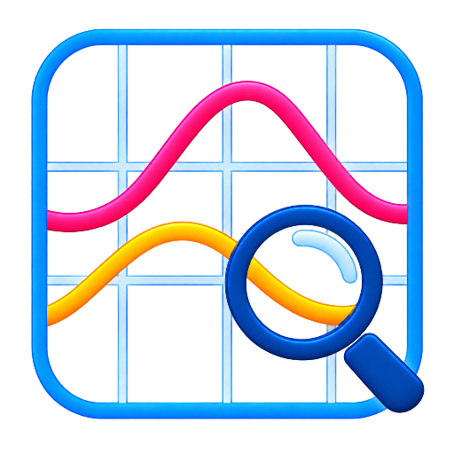

ArDiRec
ArDiRec (Ari Disturbance Recorder) is an open-source, vendor-neutral COMTRADE workstation for protection and disturbance engineers. Open any disturbance record. Understand it immediately.

ArDiRec (Ari Disturbance Recorder) is an open-source, vendor-neutral COMTRADE workstation for protection and disturbance engineers. Open any disturbance record. Understand it immediately.